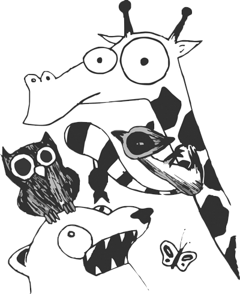

The Story of Noah’s ArkHome | Gallery | Poetry for Animals | Stories for Animals |
Dwynwen's Feast | Plays | Videos | Short works | Store |
|
A lesser man than Noah might have said, “Enough’s enough!”
At least—that’s how the story goes,
|
 |